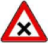
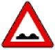
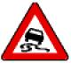
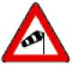
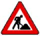
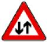
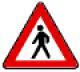
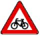
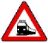
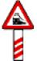

| 1 | 2 | 3 |
|---|---|---|
| lfd. Nr. | Zeichen | Erläuterungen |
| Abschnitt 1 Allgemeine Gefahrzeichen (zu § 40 Absatz 6) | ||
| 1 | Zeichen 101 Gefahrstelle | Ein Zusatzzeichen kann die Gefahr näher bezeichnen. |
| 2 | Zeichen 102  Kreuzung oder Einmündung | Kreuzung oder Einmündung mit Vorfahrt von rechts |
| 3 | Zeichen 103 Kurve | |
| 4 | Zeichen 105 Doppelkurve | |
| 5 | Zeichen 108 Gefälle | |
| 6 | Zeichen 110 Steigung | |
| 7 | Zeichen 112  Unebene Fahrbahn | |
| 8 | Zeichen 114  Schleuder- oder Rutschgefahr | Schleuder- oder Rutschgefahr bei Nässe oder Schmutz |
| 9 | Zeichen 117  Seitenwind | |
| 10 | Zeichen 120 Verengte Fahrbahn | |
| 11 | Zeichen 121 Einseitig verengte Fahrbahn | |
| 12 | Zeichen 123  Arbeitsstelle | |
| 13 | Zeichen 124 Stau | |
| 14 | Zeichen 125  Gegenverkehr | |
| 15 | Zeichen 131 Lichtzeichenanlage | |
| 16 | Zeichen 133  Fußgänger | |
| 17 | Zeichen 136 Kinder | |
| 18 | Zeichen 138  Radverkehr | |
| 19 | Zeichen 142 Wildwechsel | |
| Abschnitt 2 Besondere Gefahrzeichen vor Übergängen von Schienenbahnen mit Vorrang (zu § 40 Absatz 7) | ||
| 20 | Zeichen 151  Bahnübergang | |
| 21 | Zeichen 156  Bahnübergang mit dreistreifiger Bake | Bahnübergang mit dreistreifiger Bake etwa 240 m vor dem Bahnübergang. Die Angabe erheblich abweichender Abstände kann an der dreistreifigen, zweistreifigen und einstreifigen Bake oberhalb der Schrägstreifen in schwarzen Ziffern erfolgen. |
| 22 | Zeichen 159 Zweistreifige Bake | Zweistreifige Bake etwa 160 m vor dem Bahnübergang |
| 23 | Zeichen 162 Einstreifige Bake | Einstreifige Bake etwa 80 m vor dem Bahnübergang |